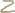
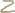

So, our goal in this video is to take the antiderivative of this fairly crazy looking expression. Or another way of saying it is to find the indefinite integral of this crazy looking expression. And the key realization right over here is that you, this expression is made up of a bunch of terms. And the indefinite integral of the entire expression is going to be equal to the indefinite integral of each of the terms.


objects 0 - 1
line badness[0][1] = 0
t penalty = -540.0
x penalty = -41.0
y penalty = -540.0

objects 2 - 3
line badness[2][3] = 0
t penalty = -0.0
x penalty = -12.0
y penalty = -0.0
So this is going to be equal to, we could look at this term right over here and just take the indefinite, take the indefinite integral of that.

objects 4 - 5
line badness[4][5] = 0
t penalty = -0.0
x penalty = -11.0
y penalty = -0.0
x to the 3rd dx.


objects 6 - 7
line badness[6][7] = 0
t penalty = -550.0
x penalty = -1.0
y penalty = -550.0
And then from that we can subtract the indefinite integral of this thing.


objects 8 - 9
line badness[8][9] = 0
t penalty = -0.0
x penalty = -20.0
y penalty = -0.0
So we can say this is, and then minus.

objects 10 - 11
line badness[10][11] = 0
t penalty = -0.0
x penalty = -9.0
y penalty = -0.0

objects 12 - 13
line badness[12][13] = 0
t penalty = -0.0
x penalty = -19.0
y penalty = -0.0

objects 14 - 15
line badness[14][15] = 0
t penalty = -380.0
x penalty = -60.0
y penalty = -380.0
The indefinite integral of 5 times the square root of x d x. And then we can look at this one right over here.


objects 16 - 18
line badness[16][18] = 0
t penalty = -0.0
x penalty = -26.0
y penalty = -0.0


objects 19 - 21
line badness[19][21] = 0
t penalty = -0.0
x penalty = -12.0
y penalty = -0.0

objects 22 - 23
line badness[22][23] = 0
t penalty = -40.0
x penalty = -54.0
y penalty = -40.0
So then we can say plus the indefinite integral of 18 square root of x.

objects 24 - 26
line badness[24][26] = 0
t penalty = -445.0
x penalty = -141.0
y penalty = -445.0
Square roots of x over x to the third, dx and then finally, and I'm running out of colors here. Finally, I need more colors in my thing. We can take the anti derivative of this.


objects 27 - 28
line badness[27][28] = 0
t penalty = -0.0
x penalty = -32.0
y penalty = -0.0

objects 29 - 30
line badness[29][30] = 0
t penalty = -65.0
x penalty = -8.0
y penalty = -65.0

objects 31 - 32
line badness[31][32] = 0
t penalty = -0.0
x penalty = -1.0
y penalty = -0.0

objects 33 - 34
line badness[33][34] = 0
t penalty = -40.0
x penalty = -1.0
y penalty = -40.0

objects 35 - 36
line badness[35][36] = 0
t penalty = -35.0
x penalty = -658.0
y penalty = -35.0
So plus the anti derivative of x to the negative 40th power dx. So, I've just rewritten this and color coded things. So, let's take the anti derivative of each of these and you'll see that'll we'll be able to do it. Using our whatever we wanna call the inverse of the power rule or the anti power rule. Whatever you might wanna call it. So lets look at the first one. So we have, we have, what I'm gonna do is I'm just gonna find the anti derivative without the constant and just add the constant at the end for the sake of this. So we just make sure we get the most general anti derivative. So here the exponent is a 3. So we can increase it by 1. So it's going to be x to the 4th. It's gonna be that same purple color.


objects 37 - 39
line badness[37][39] = 0
t penalty = -90.0
x penalty = -4.0
y penalty = -90.0
Or that pink color.

objects 40 - 41
line badness[40][41] = 0
t penalty = -210.0
x penalty = -56.0
y penalty = -210.0
It's going to be x to the 4th. And we're gonna divide x to the 4th.

objects 42 - 43
line badness[42][43] = 0
t penalty = -220.0
x penalty = -35.0
y penalty = -220.0
So it's x to the 4th over 4 is the antiderivative of x to the 3rd, and you just had this scaling quantity. The 7 out front.

objects 44 - 45
line badness[44][45] = 0
t penalty = -0.0
x penalty = -17.0
y penalty = -0.0
So we can still just have 7 out front. So we get 7x to the 4th over 4. Fair enough.


objects 46 - 47
line badness[46][47] = 0
t penalty = -585.0
x penalty = -70.0
y penalty = -585.0
From that, we're going to subtract the antiderivative of this. Now, at first, this might not be obvious that this, you could use our inverse power rule or anti-power rule here. But then you just need to realize that 5 times the principal root of x is the same thing as.

objects 48 - 49
line badness[48][49] = 0
t penalty = -55.0
x penalty = -27.0
y penalty = -55.0

objects 50 - 51
line badness[50][51] = 0
t penalty = -0.0
x penalty = -8.0
y penalty = -0.0
So, this is the same thing as 5 x X to the 1 half power.

objects 52 - 53
line badness[52][53] = 0
t penalty = -835.0
x penalty = -80.0
y penalty = -835.0
And, so, once again, the exponent here is one half, we can increment it by 1.

objects 54 - 55
line badness[54][55] = 0
t penalty = -0.0
x penalty = -17.0
y penalty = -0.0
This is going to be X to the 3 halves.

objects 56 - 57
line badness[56][57] = 0
t penalty = -140.0
x penalty = -66.0
y penalty = -140.0
And then, divide by the incremented exponent. So, divide by.


objects 58 - 59
line badness[58][59] = 0
t penalty = -25.0
x penalty = -27.0
y penalty = -25.0

 

objects 60 - 61
line badness[60][61] = 0
t penalty = -1135.0
x penalty = -5.0
y penalty = -1135.0


objects 62 - 64
line badness[62][64] = 0
t penalty = -480.0
x penalty = -220.0
y penalty = -480.0
Three halves and of course we had this five out front so we still want to have the five out front. Now this next expression looks even wackier but once again we can simplify a little bit. This is the same thing. Let me do it right over here.


objects 65 - 66
line badness[65][66] = 0
t penalty = -110.0
x penalty = -38.0
y penalty = -110.0

objects 67 - 69
line badness[67][69] = 0
t penalty = -70.0
x penalty = -13.0
y penalty = -70.0

objects 70 - 72
line badness[70][72] = 0
t penalty = -60.0
x penalty = -12.0
y penalty = -60.0
This is the same thing as 18 times x to the one half times x to the negative three power.

objects 73 - 74
line badness[73][74] = 0
t penalty = -25.0
x penalty = -26.0
y penalty = -25.0
X to the third in the denominator is the same thing as x to the negative three.

objects 75 - 76
line badness[75][76] = 0
t penalty = -0.0
x penalty = -15.0
y penalty = -0.0

objects 77 - 78
line badness[77][78] = 0
t penalty = -25.0
x penalty = -18.0
y penalty = -25.0


objects 79 - 80
line badness[79][80] = 0
t penalty = -0.0
x penalty = -10.0
y penalty = -0.0

objects 81 - 82
line badness[81][82] = 0
t penalty = -135.0
x penalty = -18.0
y penalty = -135.0
We have the same base, we can just add the exponent so this is going to be equal to 18 times x to the 2 and a half power, and a half power or another way of thinking about it, this is the same thing as 18 times x, 18 times x to the 5 halves power.

objects 83 - 85
line badness[83][85] = 0
t penalty = -0.0
x penalty = -12.0
y penalty = -0.0

objects 86 - 87
line badness[86][87] = 0
t penalty = -25.0
x penalty = -151.0
y penalty = -25.0
Two the 5 halves power.


objects 88 - 89
line badness[88][89] = 0
t penalty = -95.0
x penalty = -1.0
y penalty = -95.0
Did I do that right? Yeah, negative 3, oh sorry, this is negative 2 and a half let me make this very clear and this is going to be the negative 5 half power. X to the negative 3 is the same thing as x to the negative 6 halves, negative six halves plus 1 half is negative 5 halves.

objects 90 - 91
line badness[90][91] = 0
t penalty = -1455.0
x penalty = -722.0
y penalty = -1455.0
So once again we just have to increment this exponent. So negative 5 halves, plus 1 is going to be negative 3 halves.

objects 92 - 94
line badness[92][94] = 0
t penalty = -210.0
x penalty = -81.0
y penalty = -210.0


objects 95 - 96
line badness[95][96] = 0
t penalty = -5.0
x penalty = -12.0
y penalty = -5.0


objects 97 - 98
line badness[97][98] = 0
t penalty = -245.0
x penalty = -68.0
y penalty = -245.0
So you're going to have x, x to the negative 3 halves, and then you divide by what your exponent is when you increment, so divide it by negative, divide it by negative 3 halves. And then you have the 18 out front.

objects 99 - 101
line badness[99][101] = 0
t penalty = -865.0
x penalty = -391.0
y penalty = -865.0
And we obviously are going to have to simplify this.


objects 102 - 104
line badness[102][104] = 0
t penalty = -810.0
x penalty = -164.0
y penalty = -810.0

objects 105 - 107
line badness[105][107] = 0
t penalty = -245.0
x penalty = -81.0
y penalty = -245.0


objects 108 - 110
line badness[108][110] = 0
t penalty = -125.0
x penalty = -104.0
y penalty = -125.0
And then finally, our exponent in this term, let me not use that purple any more, the exponent, in this term right over here is negative 40, if we increment we get x to the negative 39 power, all of that over negative 39.

objects 111 - 112
line badness[111][112] = 0
t penalty = -55.0
x penalty = -168.0
y penalty = -55.0
And now we can add our constant.


objects 113 - 114
line badness[113][114] = 0
t penalty = -890.0
x penalty = -685.0
y penalty = -890.0
Now we can add our constant C, and all we need to do is simplify all of this craziness. So the first one is fairly simplified.

objects 115 - 116
line badness[115][116] = 0
t penalty = -40.0
x penalty = -22.0
y penalty = -40.0
We can write it as seven fourths.

objects 117 - 119
line badness[117][119] = 0
t penalty = -45.0
x penalty = -8.0
y penalty = -45.0

objects 120 - 121
line badness[120][121] = 0
t penalty = -1890.0
x penalty = -746.0
y penalty = -1890.0
X to the 4th.

objects 122 - 123
line badness[122][123] = 0
t penalty = -10.0
x penalty = -17.0
y penalty = -10.0

objects 124 - 125
line badness[124][125] = 0
t penalty = -140.0
x penalty = -26.0
y penalty = -140.0

objects 126 - 128
line badness[126][128] = 0
t penalty = -0.0
x penalty = -12.0
y penalty = -0.0

objects 129 - 130
line badness[129][130] = 0
t penalty = -15.0
x penalty = -31.0
y penalty = -15.0

objects 131 - 133
line badness[131][133] = 0
t penalty = -1860.0
x penalty = -955.0
y penalty = -1860.0
Now this term right over here is essentially 5 divided by 3 halves, so 5 over three halves is equal 5 times two thirds, which is equal to 10 over 3.

objects 134 - 136
line badness[134][136] = 0
t penalty = -35.0
x penalty = -20.0
y penalty = -35.0

objects 137 - 138
line badness[137][138] = 0
t penalty = -110.0
x penalty = -6.0
y penalty = -110.0


objects 139 - 141
line badness[139][141] = 0
t penalty = -1275.0
x penalty = -609.0
y penalty = -1275.0
So this thing right over here simplifies to negative 10 over 3X to the three halves. And then we have all of this craziness. Now 18 divided by negative three halves.

objects 142 - 143
line badness[142][143] = 0
t penalty = -90.0
x penalty = -44.0
y penalty = -90.0

objects 144 - 145
line badness[144][145] = 0
t penalty = -10.0
x penalty = -15.0
y penalty = -10.0

objects 146 - 147
line badness[146][147] = 0
t penalty = -230.0
x penalty = -26.0
y penalty = -230.0

objects 148 - 149
line badness[148][149] = 0
t penalty = -0.0
x penalty = -18.0
y penalty = -0.0

objects 150 - 152
line badness[150][152] = 0
t penalty = -10.0
x penalty = -23.0
y penalty = -10.0
divided by negative 3 halves is equal to 18 times.


objects 153 - 154
line badness[153][154] = 0
t penalty = -40.0
x penalty = -23.0
y penalty = -40.0

objects 155 - 156
line badness[155][156] = 0
t penalty = -0.0
x penalty = -109.0
y penalty = -0.0
Negative two thirds, which is equal to, well, we can, we can simplify this a little bit.

objects 157 - 158
line badness[157][158] = 0
t penalty = -210.0
x penalty = -28.0
y penalty = -210.0
This is the same thing as 6.

objects 159 - 160
line badness[159][160] = 0
t penalty = -0.0
x penalty = -73.0
y penalty = -0.0

objects 161 - 162
line badness[161][162] = 0
t penalty = -0.0
x penalty = -14.0
y penalty = -0.0

objects 163 - 165
line badness[163][165] = 0
t penalty = -1315.0
x penalty = -855.0
y penalty = -1315.0
This is the same thing as 6 times negative 2 which is equal to negative 12.

objects 166 - 167
line badness[166][167] = 0
t penalty = -0.0
x penalty = -9.0
y penalty = -0.0

objects 168 - 169
line badness[168][169] = 0
t penalty = -100.0
x penalty = -5.0
y penalty = -100.0

objects 170 - 171
line badness[170][171] = 0
t penalty = -20.0
x penalty = -16.0
y penalty = -20.0

objects 172 - 173
line badness[172][173] = 0
t penalty = -0.0
x penalty = -42.0
y penalty = -0.0
So, this expression right over here, is negative 12 x to the negative 3 halves. And then finally this one right over here, we can just rewrite it as.


objects 174 - 175
line badness[174][175] = 0
t penalty = -45.0
x penalty = -24.0
y penalty = -45.0

objects 176 - 178
line badness[176][178] = 0
t penalty = -75.0
x penalty = -2.0
y penalty = -75.0

objects 179 - 181
line badness[179][181] = 0
t penalty = -75.0
x penalty = -21.0
y penalty = -75.0
If we want, we could, well, we could just write negative one thirty-ninths x to the negative 39.


objects 182 - 183
line badness[182][183] = 0
t penalty = -0.0
x penalty = -673.0
y penalty = -0.0
Plus, plus C, and we're done. We found the indefinite integral of all of this craziness.


objects 184 - 185
line badness[184][185] = 0
t penalty = -0.0
x penalty = -698.0
y penalty = -0.0

objects 186 - 188
line badness[186][188] = 0
t penalty = -635.0
x penalty = -666.0
y penalty = -635.0


objects 189 - 191
line badness[189][191] = 0
t penalty = 0
x penalty = 0
y penalty = 0